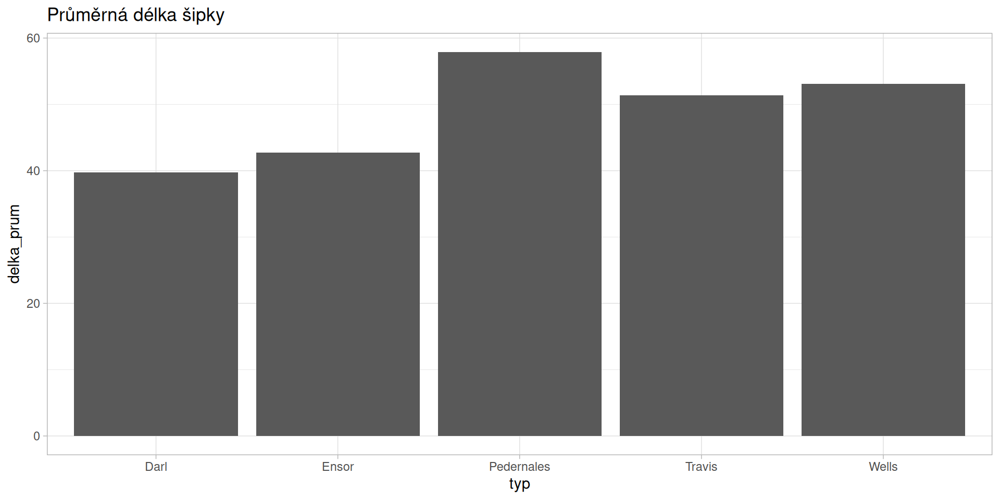

library(here)
library(dplyr)
sipky <- read.csv(here("dartpoints.csv"))Data manipulation with dplyr
Data Transformation
Package
dplyr
Goals
We will learn how to:
- select desired variables –
select() - rename your variables –
rename() - order them from lowest to highest values (or vice versa) –
arrange() - filter your data based on different conditions –
filter() - calculate different summary statistics such as mean or count –
summarise() - add new variables such as percentage –
mutate() - work with different functions more effectively –
%>% - save your results as comma separated file
Before we begin
- load packages
hereanddplyr(don’t forget to install them firstly, if you haven’t done so yet) - open the project from last lecture (or create a new one if you don’t have it)
- create a new script
- load data dartpoints.csv into your script
- if you are loading data with
herefunction don’t forget to check whether your data and script are in the same folder as your project - create an object called “sipky” from the loaded database (with
<-)
Selecting variables
select(dataframe, variable1, variable2)- sometimes you will need to remove variables you don’t need in your work, to have your database more user friendly
- for example, you need only variables dealing with major proportions of the dartpoints, but your database have plenty of other variables which are making it difficult to observe, like here:
head(sipky) Name Catalog TARL Quad Length Width Thickness B.Width J.Width H.Length
1 Darl 41-0322 41CV0536 26/59 42.8 15.8 5.8 11.3 10.6 11.6
2 Darl 35-2946 41CV0235 21/63 40.5 17.4 5.8 NA 13.7 12.9
3 Darl 35-2921 41CV0132 20/63 37.5 16.3 6.1 12.1 11.3 8.2
4 Darl 36-3487 41CV0594 10/54 40.3 16.1 6.3 13.5 11.7 8.3
5 Darl 36-3321 41CV1023 12/58 30.6 17.1 4.0 12.6 11.2 8.9
6 Darl 35-2959 41CV0235 21/63 41.8 16.8 4.1 12.7 11.5 11.0
Weight Blade.Sh Base.Sh Should.Sh Should.Or Haft.Sh Haft.Or
1 3.6 S I S T S E
2 4.5 S I S T S E
3 3.6 S I S T S E
4 4.0 S I S T S E
5 2.3 S I S T S E
6 3.0 S E I T I CSelecting variables
- to create a new dataframe, simply use function
selectand define which variables you want to keep
sipky <- select(sipky, Name, Length, Width, Weight)
head(sipky) Name Length Width Weight
1 Darl 42.8 15.8 3.6
2 Darl 40.5 17.4 4.5
3 Darl 37.5 16.3 3.6
4 Darl 40.3 16.1 4.0
5 Darl 30.6 17.1 2.3
6 Darl 41.8 16.8 3.0Renaming variables
- renaming your variables with function
rename(data, new_name = old_name)can be useful when dealing with complicated code names or different languages - Hint: don’t forget to save object with new variable names by
<-
sipky <- rename(sipky,
typ = Name,
delka = Length,
sirka = Width,
hmotnost = Weight)
head(sipky) typ delka sirka hmotnost
1 Darl 42.8 15.8 3.6
2 Darl 40.5 17.4 4.5
3 Darl 37.5 16.3 3.6
4 Darl 40.3 16.1 4.0
5 Darl 30.6 17.1 2.3
6 Darl 41.8 16.8 3.0Arranging values in ascending order…
- here you can order your observations from the lowest to highest (or vice versa). To do so, use function
arrange(data, variable)
head(arrange(sipky, delka)) typ delka sirka hmotnost
1 Darl 30.6 17.1 2.3
2 Darl 31.2 15.6 2.5
3 Darl 32.0 16.0 3.3
4 Darl 32.4 14.5 2.5
5 Darl 33.1 17.4 4.2
6 Darl 33.5 16.6 3.2…and in descending order
- if you want to order the values from higher to smaller just add
desc()
head(arrange(sipky, desc(delka))) typ delka sirka hmotnost
1 Pedernales 109.5 49.3 28.8
2 Pedernales 84.0 21.2 9.3
3 Pedernales 78.3 28.1 14.8
4 Pedernales 70.4 30.4 13.1
5 Travis 69.0 20.9 11.4
6 Pedernales 67.2 27.1 15.3Task: What will happen if you will try to order non-numerical variable, but a categorical variable (such as type of the dartpoint)?
Filtering
- function
filter(data, variable <operator> value)allows you to filter your data based on different conditions, for example minimal weight, type of the dartpoint, etc - logical and mathematical operators: ==, !=, <, >, >=, <=, &, |, etc (use
?dplyr::filterfor more details)
- here we use
>to get only dartpoints with the length higher than 80 cm
filter(sipky, delka > 80) typ delka sirka hmotnost
1 Pedernales 109.5 49.3 28.8
2 Pedernales 84.0 21.2 9.3- and here we use
==to choose only those dartpoints which are of type “Travis”
filter(sipky, typ == "Travis") typ delka sirka hmotnost
1 Travis 56.5 21.1 9.5
2 Travis 54.6 22.4 10.4
3 Travis 46.3 21.3 7.5
4 Travis 57.6 18.9 8.7
5 Travis 49.1 21.4 6.9
6 Travis 64.6 21.5 15.0
7 Travis 69.0 20.9 11.4
8 Travis 40.1 18.4 6.3
9 Travis 41.5 19.2 7.5
10 Travis 46.3 17.9 5.9
11 Travis 39.6 21.5 5.4- alternatively, you can exclude all points of a type “Travis” by negation
!=
head(filter(sipky, typ != "Travis")) typ delka sirka hmotnost
1 Darl 42.8 15.8 3.6
2 Darl 40.5 17.4 4.5
3 Darl 37.5 16.3 3.6
4 Darl 40.3 16.1 4.0
5 Darl 30.6 17.1 2.3
6 Darl 41.8 16.8 3.0- add
&if you want to filter with more than one condition, for example here we will filter all points which are type “Wells” AND are heavier than 10 grams
filter(sipky, typ == "Wells" & hmotnost > 10) typ delka sirka hmotnost
1 Wells 65.4 25.1 12.6
2 Wells 58.9 24.4 10.5
3 Wells 63.1 24.7 16.3- Task: instead of
&try operator|(OR) and see how the result differs
Filtering based on a vector
- you can make your code less complicated when you create vector from desired values and then filter all observations which fall into that vector by using operator
%in%
vyber <- c("Pedernales", "Ensor")
head(filter(sipky, typ %in% vyber)) typ delka sirka hmotnost
1 Ensor 43.5 20.1 4.6
2 Ensor 42.1 20.8 5.4
3 Ensor 42.1 25.1 5.9
4 Ensor 43.1 20.0 5.1
5 Ensor 37.5 21.8 4.7
6 Ensor 55.2 22.5 7.2Summaries
- we already know some functions to calculate basic summaries, for example function
mean
mean(sipky$delka)[1] 49.33077- but if you want to create a new dataframe from calculated statistics, function
summarise(data, new_variable = summary_statistics)is much more helpfull - for summary statistics you can use different functions:
mean(),median(),sd(),min()…, (use?summarisefor more details)
summarise(sipky, delka_prumer = mean(delka)) delka_prumer
1 49.33077- you can also calculate more summaries:
summarise(sipky,
delka_prumer = mean(delka),
delka_sd = sd(delka),
delka_min = min(delka),
delka_max = max(delka),
pocet = n()) delka_prumer delka_sd delka_min delka_max pocet
1 49.33077 12.73619 30.6 109.5 91Grouping
- summaries above were applied on whole dataframe. Here we will learn how to calculate summaries for each type of the dartpoint by using
group_by(data, variable_to_be_grouped_by)
sipky_typ <- group_by(sipky, typ)- at first sight, you don´t see any differences, but they will be visible after applying function
summarise
summarise(sipky_typ, delka_prumer = mean(delka))# A tibble: 5 × 2
typ delka_prumer
<fct> <dbl>
1 Darl 39.8
2 Ensor 42.7
3 Pedernales 57.9
4 Travis 51.4
5 Wells 53.1- you can also calculate more summaries at once and use
roundto remove unnecessary decimals:
summarise(sipky_typ,
delka_prumer = round(mean(delka), 1),
pocet = n())# A tibble: 5 × 3
typ delka_prumer pocet
<fct> <dbl> <int>
1 Darl 39.8 28
2 Ensor 42.7 10
3 Pedernales 57.9 32
4 Travis 51.4 11
5 Wells 53.1 10- Task: save the result as a new dataframe “sipky_sum” for later work
sipky_sum <- summarise(sipky_typ,
delka_prumer = round(mean(delka), 1),
pocet = n())Mutate
- function
mutatecreates a new variable, here we will show how to add variable with percentages - note:
sumcalculates a total sum of values from chosen variable (in this case - “pocet”)
mutate(sipky_sum,
procento = pocet/sum(pocet)*100)# A tibble: 5 × 4
typ delka_prumer pocet procento
<fct> <dbl> <int> <dbl>
1 Darl 39.8 28 30.8
2 Ensor 42.7 10 11.0
3 Pedernales 57.9 32 35.2
4 Travis 51.4 11 12.1
5 Wells 53.1 10 11.0- Hint: you can again remove unnecessary decimals by adding
roundbut be careful with the right number of the brackets()!
mutate(sipky_sum,
procento = round(pocet/sum(pocet)*100, 0))# A tibble: 5 × 4
typ delka_prumer pocet procento
<fct> <dbl> <int> <dbl>
1 Darl 39.8 28 31
2 Ensor 42.7 10 11
3 Pedernales 57.9 32 35
4 Travis 51.4 11 12
5 Wells 53.1 10 11Pipe operator
- when applying plenty of transformation on one dataset “pipe operator” (
%>%) could make your work easier and code shorter and more readable - notice you don´t need to repeat the name of the dataframe into every function arguments, since you already specified it in the begining of the “pipe”
sipky %>%
filter(delka > 70) %>%
arrange(delka) typ delka sirka hmotnost
1 Pedernales 70.4 30.4 13.1
2 Pedernales 78.3 28.1 14.8
3 Pedernales 84.0 21.2 9.3
4 Pedernales 109.5 49.3 28.8More complex summarising with dplyr and pipe
sipky %>%
group_by(typ) %>%
summarise(
delka_prum = round(mean(delka), 1),
hmotnost_prum = round(mean(hmotnost), 1),
pocet = n()) %>%
mutate(procento = round(pocet/sum(pocet)*100, 1)) %>%
arrange(desc(pocet))# A tibble: 5 × 5
typ delka_prum hmotnost_prum pocet procento
<fct> <dbl> <dbl> <int> <dbl>
1 Pedernales 57.9 10.6 32 35.2
2 Darl 39.8 4.4 28 30.8
3 Travis 51.4 8.6 11 12.1
4 Ensor 42.7 5.1 10 11
5 Wells 53.1 8.7 10 11 Visualising your summaries
sipky %>%
group_by(typ) %>%
summarise(
delka_prum = mean(delka),
hmotnost_prum = mean(hmotnost),
pocet = n()) %>%
mutate(procento = round(pocet/sum(pocet)*100, 1)) %>%
arrange(desc(pocet))# A tibble: 5 × 5
typ delka_prum hmotnost_prum pocet procento
<fct> <dbl> <dbl> <int> <dbl>
1 Pedernales 57.9 10.6 32 35.2
2 Darl 39.8 4.41 28 30.8
3 Travis 51.4 8.59 11 12.1
4 Ensor 42.7 5.06 10 11
5 Wells 53.1 8.68 10 11 Visualising your summaries
sipky %>%
group_by(typ) %>%
summarise(
delka_prum = mean(delka),
hmotnost_prum = mean(hmotnost),
pocet = n()) %>%
mutate(procento = round(pocet/sum(pocet)*100, 1)) %>%
arrange(desc(pocet)) %>%
ggplot() +
aes(x = typ, y = delka_prum) +
geom_col() +
labs(title = "Průměrná délka šipky") +
theme_light()
Saving your results
- use
write.csvfor saving your results as a comma separated file
sipky %>%
group_by(typ) %>%
summarise(
delka_prum = mean(delka),
hmotnost_prum = mean(hmotnost),
pocet = n()) %>%
mutate(procento = round(pocet/sum(pocet)*100, 1)) %>%
arrange(desc(pocet)) %>%
write.csv(here("sipky_result.csv"))- or save your summarised data frame as an object and save it later
Exercise
- Create new a script in your project folder and save.
- Load packages necessary for: (a) loading, (b) transformation, and (c) visualization of data.
- Load database
bacups.csvand save it as an object. - Create a new dataframe having only variables
H,RDandPhase. - Try to use pipes
%>%. - Rename the variables to
height,rimdiameterandphase. - For each phase calculate following summary statistics:
- mean and median vessel height,
- standard deviation of vessel height,
- correlation between height and rim diameter, and
- number of vessels.
- mean and median vessel height,
- Calculate percentage of vessels in each phase.
- Arrange the results from highest to lowest mean values.
- Save your result as a CSV file
- Are height of vessels or rim diameter normally distributed? Why/why not?